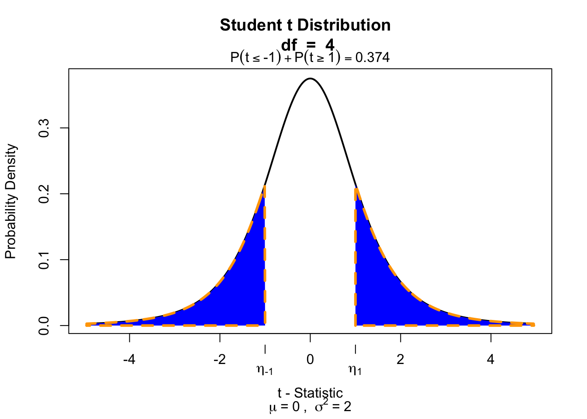

William Sealy Gosset (aka Student) in 1908 (age 32)
In probability and statistics, Student’s t-distribution (or simply the t-distribution) is any member of a family of continuous probability distributions that arises when estimating the mean of a normally distributed population in situations where the sample size is small and population standard deviation is unknown.
In the English-language literature it takes its name from William Sealy Gosset’s 1908 paper in Biometrika under the pseudonym “Student”. Gosset worked at the Guinness Brewery in Dublin, Ireland, and was interested in the problems of small samples, for example the chemical properties of barley where sample sizes might be as low as 3.
So the t-statistic represents the deviation of the sample mean \(\bar{x}\) from the population mean \(\mu\), considering the sample size, expressed as the degrees of freedom \(df = n - 1\)
So if the population is normaly distributed (assumption of normality) the t-distribution represents the deviation of sample means from the population mean (\(\mu\)), given a certain sample size (\(df = n - 1\)).
The t-distibution therefore is different for different sample sizes and converges to a standard normal distribution if sample size is large enough.
The effect-size is the standardized difference between the mean and the expected \(\mu\). In the t-test, effect-size can be expressed as \(d\) (Cohen’s d)). \[d = \frac{\bar{x}}{s} = \frac{t}{\sqrt{n}}\]
cohenD <- tStat /sqrt(n)cohenD
[1] 0.2828427
See Tukey (1969) and Section 3.7.4 of Field:
being so disinterested in our variables that we do not care about their units can hardly be desirable.
Effect-size r
Another option is to have the effect size expressed as \(r\) (similar to correlation coefficient). \[r = \sqrt{\frac{t^2}{t^2 + \text{df}}}\]
r <-sqrt(tStat^2/ (tStat^2+ df))r
[1] 0.2747211
Effect-sizes
We can also calculate effect-sizes \(r\) for all our calculated t-values. Under the assumption of \(H_0\) the effect-size distribution looks like this.
r <-sqrt(t.values^2/(t.values^2+ df))tail(cbind(mean.x.values, mu, se.x.values, t.values, r))
In the Paired samples t-test the deviation (\(D\)) for each pair is calculated and the mean of these deviations (\(\bar{D}\)) is tested against the null hypothesis where \(\mu = 0\).
\[t_{n-1} = \frac{\bar{D} - \mu}{ {SE}_D }\] Where \(n\) (the number of cases) minus \(1\), are the degrees of freedom \(df = n - 1\) and \(SE_D\) is the standard error of \(D\), defined as \(s_D/\sqrt{n}\).
In the independent-samples t-test the mean of both independent samples is calculated and the difference of these \((\bar{X}_1 - \bar{X}_2)\) means is tested against the null hypothesis where \(\mu = 0\).
\[t_{n_1 + n_2 -2} = \frac{(\bar{X}_1 - \bar{X}_2) - \mu}{{SE}_p}\] Where \(n_1\) and \(n_2\) are the number of cases in each group and \(SE_p\) is the pooled standard error.
Hypothesis
\[\begin{aligned}
H_0 &: t = 0 = \mu_t \\
H_A &: t \neq 0 \\
H_A &: t > 0 \\
H_A &: t < 0 \\
\end{aligned}\]
Data structure
index
k
outcome
1
1
x
2
1
x
3
2
x
4
2
x
Where \(k\) is the level of the categorical predictor variable and \(x\) is the value of the outcome/dependent variable.
Additional assumption
Specific for independent sample \(t\)-test.
Equality of variance
\(H_0\) : Variance \(=\) equal (\(p\) > .05)
\(H_A\) : Variance \(\neq\) equal (\(p\) < .05)
Example
We are going to use the IQ estimates we collected. You had to guess the IQ of the one sitting next to you and your own IQ. But we are going to add class position to the data set. We did not register this so we are going to simulate some positions.
if(!"visualize"%in%installed.packages()) { install.packages("visualize") }library("visualize")if (df <=3) df <- df +5# cheat to be able to build slides.. if (is.na(tStat)) tStat <-1# cheat to be able to build slides.. visualize.t(c(-round(tStat, 2), round(tStat, 2)), df+1, section="tails")

Effect-size
\[r = \sqrt{\frac{t^2}{t^2 + \text{df}}}\]
r <-sqrt(tStat^2/(tStat^2+ df))r
[1] 0.5
d <-2*tStat /sqrt(df)d
[1] 1.154701
But what about equal variances?!
There exist different hypothesis tests for this - the most used is Levene’s test:
if(!"car"%in%installed.packages()) { install.packages("car") }library("car")leveneTest(y = ownIQ, group = classPosition)
Levene's Test for Homogeneity of Variance (center = median)
Df F value Pr(>F)
group 1 NaN NaN
0
But what about equal variances?!
Warning
Levene’s test (and other significance tests like it, such as Shapiro for normality) are heavily influenced by sample size, so a significant test result does not necessarily mean that you have a problem. A more pragmatic rule of thumb is to look at the ratio of variances - a ratio greater than 2 is problematic. Additionally, Welch test is a version of the \(t\)-test that handles unequal variances better.
The difference only matters when \(n_A \neq n_B\)!